Complete User Guide & Feature Overview
The MB-820 Quiz is a browser-based study tool designed to help you prepare for the Microsoft Dynamics 365 Business Central Functional Consultant (MB-820) certification exam. No installation is required — simply open index.html in your browser.
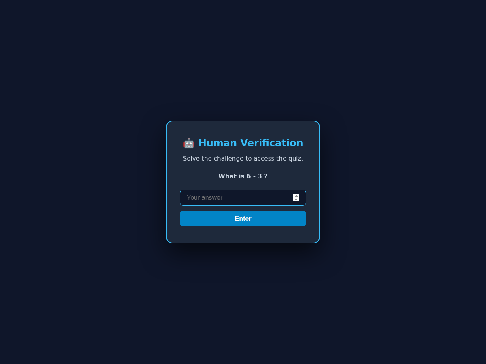
When you first open the quiz, a Human Verification card appears over a blurred background. This is a lightweight bot-protection mechanism that ensures real users are accessing the content.
After passing verification, you land on the Main Dashboard — your hub for all quiz activities. It is organized into distinct sections that scroll vertically.
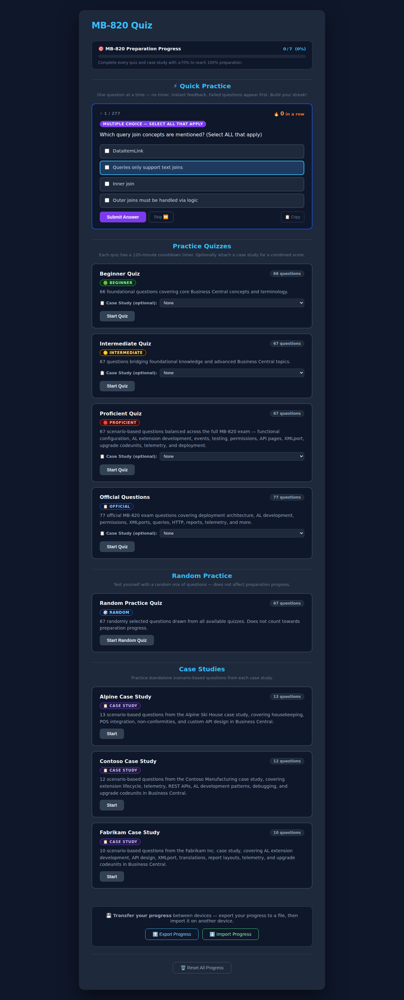
Tracks how many quizzes and case studies you have completed with ≥70%. Fills to 100% when everything is passed.
Shown when you have paused or navigated away mid-quiz. Reminds you to continue where you left off.
One question at a time, no timer, instant feedback. Draws from all 277 questions and prioritizes ones you previously got wrong.
Four structured quiz sets (Beginner → Official) each with a 120-minute timer. Can be combined with a Case Study.
67 randomly selected questions from all sets. Results don't count towards preparation progress.
3 standalone scenario-based test cases (Alpine, Contoso, Fabrikam). Can also be run after a Practice Quiz for a combined score.
Transfer all your progress between devices by exporting to a JSON file and importing on another browser.
Wipes all saved data including scores, history, and timers. Individual quiz/case reset buttons are also available per card.
Quick Practice is the fastest way to squeeze in focused study. It sits at the top of the dashboard and serves one question at a time with no countdown pressure.
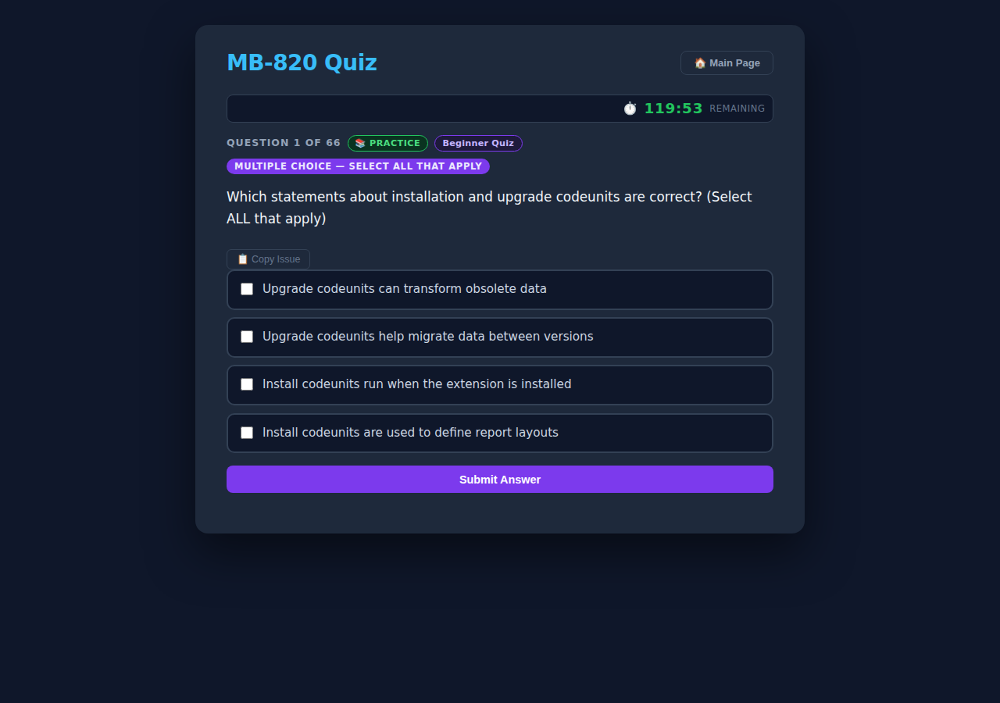
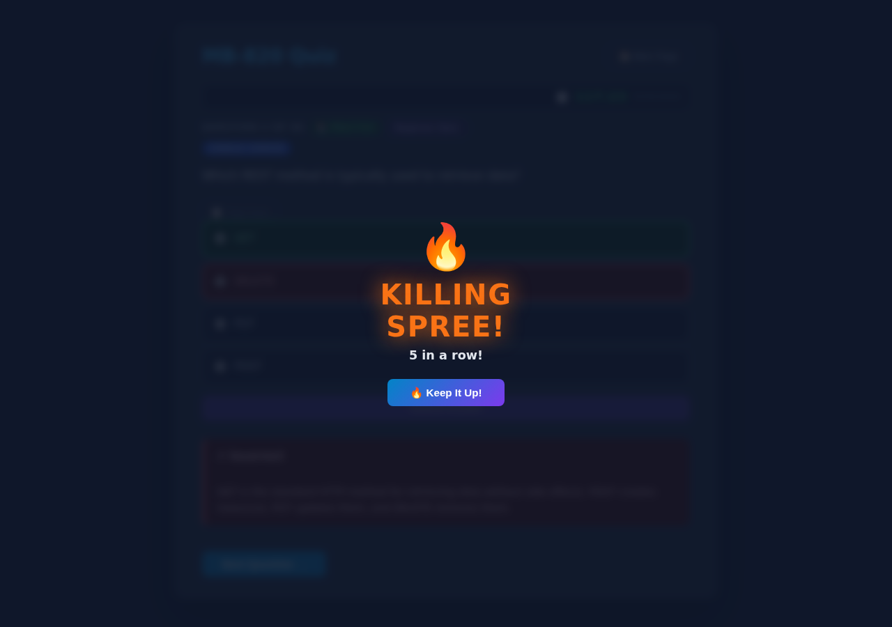
Every consecutive correct answer increases your streak counter. Milestone achievements unlock a celebration overlay:
KILLING SPREE! — Keep the momentum going.
RAMPAGE! — You're on fire!
DOMINATING! — Impressive knowledge.
UNSTOPPABLE! — You know this material cold.
There are four structured quiz sets designed to progressively challenge you, plus a random practice option. Each has a 120-minute countdown timer mirroring the actual exam conditions.
66 foundational questions covering core Business Central concepts and terminology. Perfect starting point for newcomers.
67 questions bridging foundational knowledge and advanced Business Central topics. For those with some BC experience.
67 scenario-based questions balanced across the full MB-820 exam: AL development, events, testing, permissions, API pages, XMLports, telemetry, and deployment.
77 official MB-820 exam questions covering deployment architecture, AL development, permissions, XMLports, queries, HTTP, reports, telemetry, and more.
67 randomly selected questions drawn from all available sets. Great for mixed revision. Note: results do not count towards the preparation progress bar.
Each quiz card offers the following buttons depending on its state:
Each Practice Quiz card has a Case Study (optional) dropdown. Selecting a case study (Alpine, Contoso, or Fabrikam) runs the quiz and the case study back-to-back, with a combined weighted score (70% quiz + 30% case study) shown on the results screen.
Every time you start a new quiz (or case study), a mode selection overlay appears. Choose the mode that best fits your current study goal.
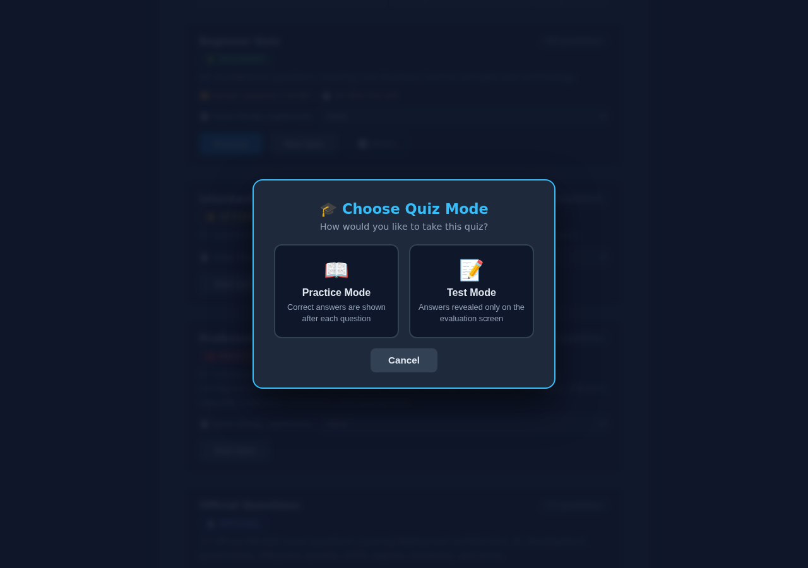
| Feature | 📖 Practice Mode | 📝 Test Mode |
|---|---|---|
| Immediate feedback per question | ✓ Yes — shown right away | ✗ No — hidden |
| Explanation text per question | ✓ Yes | ✗ Shown only at the end |
| Correct answers highlighted | ✓ Green/red highlight | ✗ Revealed on results screen |
| Peek at current score during quiz | ✗ Not available | ✓ Peek button available |
| Best for | Learning new material, first attempt | Simulating real exam conditions |
Questions come in two types, clearly indicated by a colored badge at the top of each question.
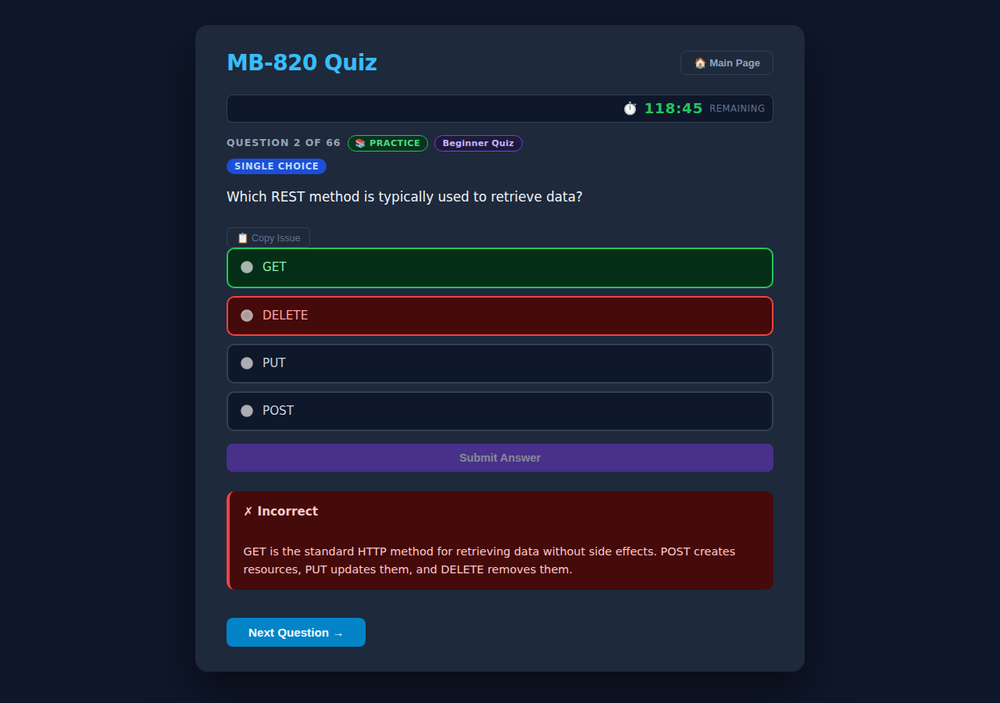
Select exactly one answer using radio buttons. The Submit Answer button becomes active immediately upon selection.
Select all correct answers using checkboxes. The question text specifies the exact count (e.g. "Select TWO", "Select ALL that apply").
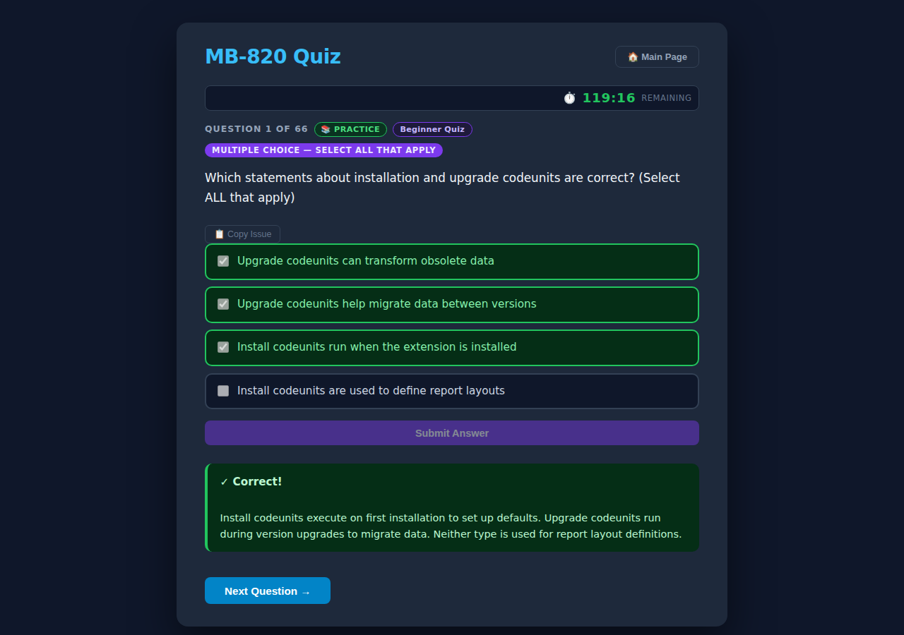
This is the correct answer (shown regardless of what you selected).
You selected this answer but it is incorrect.
Every question has a small 📋 Copy Issue button. Clicking it copies the full question details (text, choices, correct answer) to your clipboard in a formatted template — ready to paste into a Teams chat to report a bug or typo.
Every Practice Quiz runs with a 120-minute countdown timer matching the actual MB-820 exam duration. The timer is displayed prominently in the header bar throughout the quiz.
When the timer reaches zero, it displays "⏱ 00:00 — Time's up!" but does not forcibly submit your quiz.
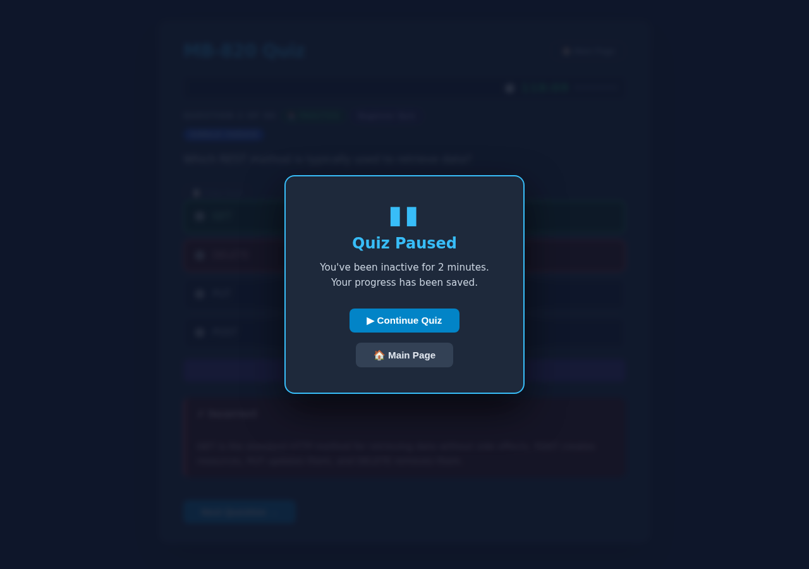
If you stop interacting with the page for 2 minutes, the quiz automatically pauses and displays this overlay. Your timer also stops — so you won't lose time while away.
The quiz automatically saves your position and remaining time every 10 seconds. If your browser crashes or you accidentally close the tab, you can return and click Resume from the quiz card to pick up where you left off.
In Test Mode, no answer feedback is given during the quiz — just like the real exam. To keep you motivated (and a little nervous), there is a Peek Score feature.
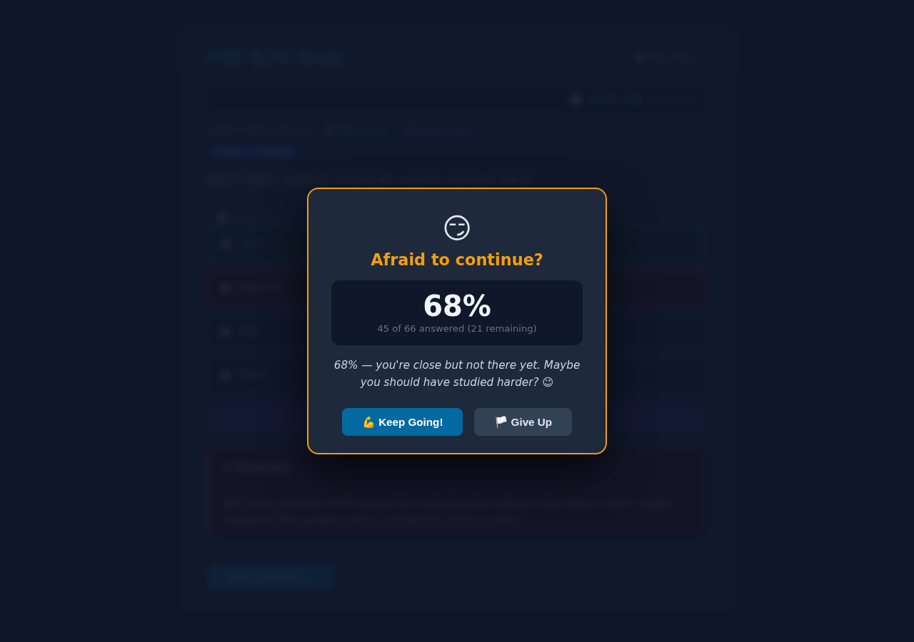
In Test Mode, a Peek Score button appears next to the Submit button. Click it at any time to open the Peek overlay and see your current running percentage.
Dismisses the overlay and returns to the quiz.
Ends the quiz and returns to the main dashboard. Progress is saved.
After answering all questions (or after time runs out), the Score Summary screen is displayed.
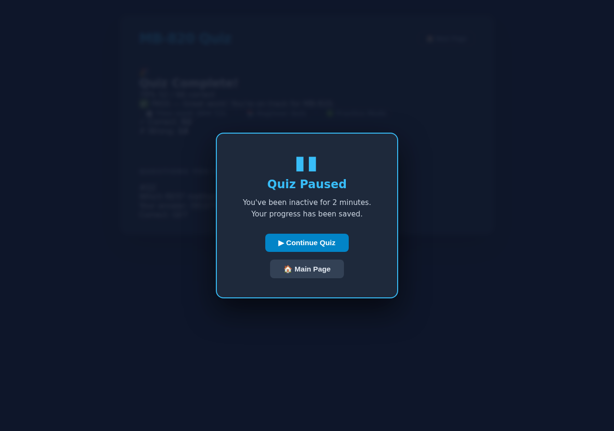
Returns to the dashboard. The quiz card now shows your last attempt badge (✅ or ⚠️) with the percentage.
Re-opens the quiz in read-only review mode so you can read through every question, your answer, and the explanation.
Case Studies are scenario-based question sets drawn from realistic Business Central extension development projects. They are more advanced and closely mirror the style of questions found in the actual MB-820 exam.
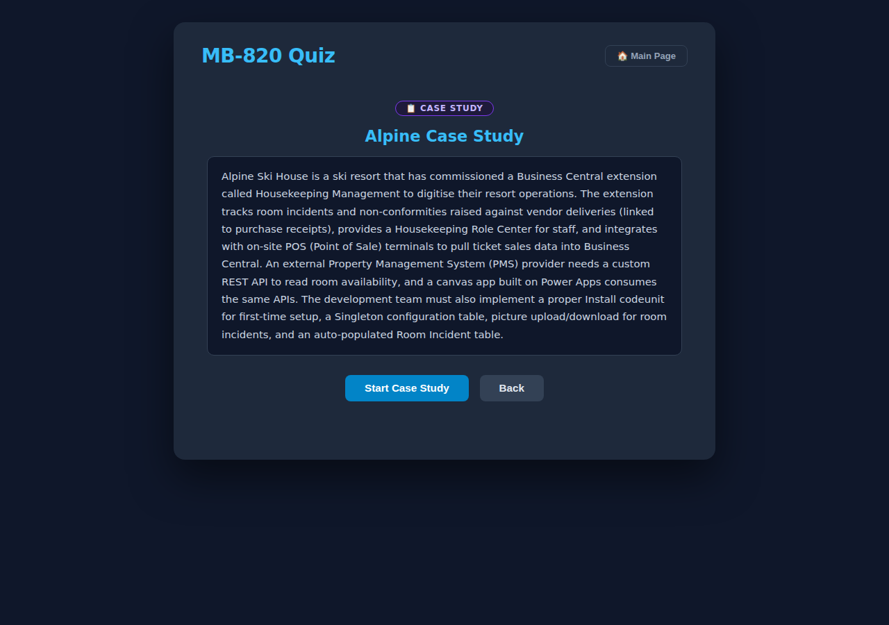
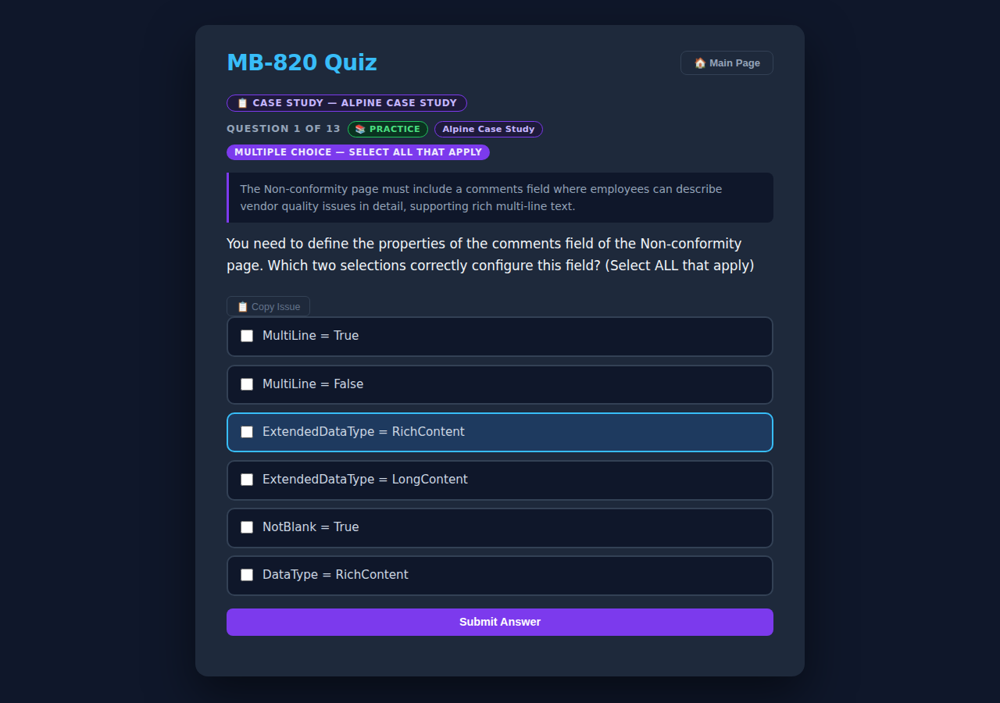
13 questions — Housekeeping Management extension, POS integration, custom API design, non-conformity tracking.
12 questions — Extension lifecycle, telemetry, REST APIs, AL development patterns, debugging, upgrade codeunits.
10 questions — AL extension development, API design, XMLport, translations, report layouts, telemetry, upgrade codeunits.
Click Start on a case study card in the Case Studies section. Only the case study questions are shown, with no countdown timer (study time is still tracked silently).
Select a case study from the Case Study (optional) dropdown on a Practice Quiz card before starting. The quiz runs first (with timer), then the case study follows. A combined weighted score is shown.
The quiz tracks your study progress in several ways, all stored locally in your browser via localStorage.
The bar at the top of the dashboard shows how many of the 7 items (4 quizzes + 3 case studies) you have completed with ≥ 70%:
Complete every quiz and case study with ≥70% to reach 100% preparation.
Scrolling to the bottom of the dashboard reveals your Previous Attempts section — a chronological list of every quiz and case study you have completed, with:
Up to 50 attempts are retained. Use the 🗑️ Clear History button to remove the history log while keeping your current best scores.
The Export / Import feature at the bottom of the dashboard allows you to back up and transfer your study progress between devices or browsers.
Downloads a .json file (named mb820-progress-YYYY-MM-DD.json) containing all your quiz results, timers, history, and streak data. Store it safely or transfer it to another device.
Opens a file picker. Select a previously exported .json file. A confirmation prompt warns you that existing data will be overwritten. The page reloads with your restored progress.
mb820-progress-YYYY-MM-DD.json is downloaded to your computer.Check that your browser allows localStorage. Incognito/Private mode may block it. Use a regular browser window.
Click the 📋 Copy Issue button on any question to copy a report template, then send it via Teams chat to the quiz maintainer.
Make sure all .js files are present in the same folder as index.html. The quiz requires no internet connection.
Use 🗑️ Reset All Progress at the bottom of the dashboard to clear everything, or reset individual quizzes using their 🔄 Reset buttons.